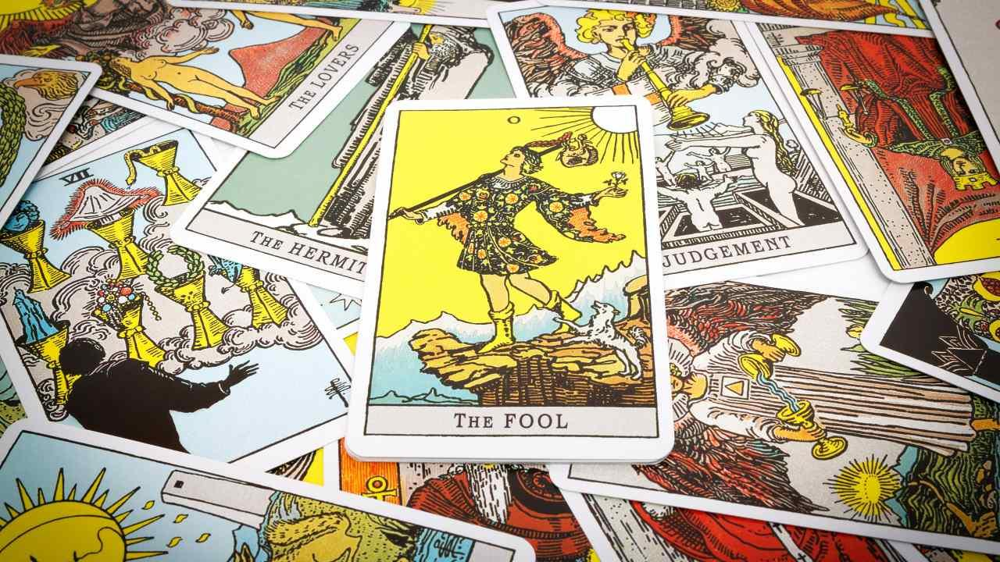

ไพ่ทาโรต์

เป็นชุดไพ่ที่มีต้นกำเนิดมาจากยุโรปในช่วงศตวรรษที่ 15 โดยเดิมใช้สำหรับเล่นเกมและความบันเทิง ไพ่ทาโรต์ (Tarot) หรือที่คนไทยนิยมเรียกว่า ไพ่ยิปซี คือเครื่องมือทำนายชะตาและสะท้อนสภาวะจิตใจรูปแบบหนึ่งที่ได้รับความนิยมอย่างแพร่หลายทั่วโลก โดยใช้ภาพวาด สัญลักษณ์ และเรื่องราวบนหน้าไพ่เป็นสื่อกลางในการสื่อความหมาย ไพ่ทาโรต์มาตรฐานหนึ่งสำรับจะมีจำนวนทั้งหมด 78 ใบ แบ่งออกเป็น 2 ชุดหลัก คือ ไพ่ชุดใหญ่ (Major Arcana) จำนวน 22 ใบ ซึ่งเปรียบเสมือนการเดินทางของชีวิตและบทเรียนสำคัญทางจิตวิญญาณ เรื่องราวเหตุการณ์ใหญ่ๆ หรือสัจธรรมของชีวิต และ ไพ่ชุดเล็ก (Minor Arcana) จำนวน 56 ใบ ที่สะท้อนถึงรายละเอียดในชีวิตประจำวัน อารมณ์ ความคิด ปัญหา การงาน และการเงิน โดยแบ่งออกเป็น 4 ธาตุ ได้แก่ ไม้เท้า (ธาตุไฟ - การงานและการลงมือทำ) ถ้วย (ธาตุน้ำ - อารมณ์ความรู้สึกและความรัก) ดาบ (ธาตุลม - ความคิด อุปสรรค และการตัดสินใจ) และเหรียญ (ธาตุดิน - การเงิน ทรัพย์สิน และความมั่นคง) ซึ่งการอ่านไพ่ทาโรต์ไม่ได้อาศัยการคำนวณวันเดือนปีเกิดเหมือนโหราศาสตร์ แต่อาศัยการสุ่มสับและเลือกไพ่ ณ สภาวะจิตในปัจจุบัน ทำให้ไพ่ทาโรต์เหมาะสำหรับการสะท้อนสภาวะจิตใต้สำนึก ช่วยเปิดมุมมองใหม่ในการแก้ปัญหา ให้แนวทางการตัดสินใจ และทำนายแนวโน้มของอนาคตที่จะเกิดขึ้นตามเหตุและปัจจัย ณ เวลาปัจจุบันอย่างมีสติ